Note
Go to the end to download the full example code
Calibration of the Chaboche mechanical model¶
In this example we present calibration methods on the Chaboche model. A detailed explanation of this mechanical law is presented here.
import openturns as ot
import openturns.viewer as viewer
from matplotlib import pylab as plt
from openturns.usecases import chaboche_model
ot.Log.Show(ot.Log.NONE)
Load the Chaboche data structure
cm = chaboche_model.ChabocheModel()
We get the Chaboche model and the joint input distribution :
g = cm.model
inputDistribution = cm.inputDistribution
Create the Monte-Carlo sample.
sampleSize = 100
inputSample = inputDistribution.getSample(sampleSize)
outputStress = g(inputSample)
outputStress[0:5]
Plot the histogram of the output.
histoGraph = ot.HistogramFactory().build(outputStress / 1.0e6).drawPDF()
histoGraph.setTitle("Histogram of the sample stress")
histoGraph.setXTitle("Stress (MPa)")
histoGraph.setLegends([""])
view = viewer.View(histoGraph)
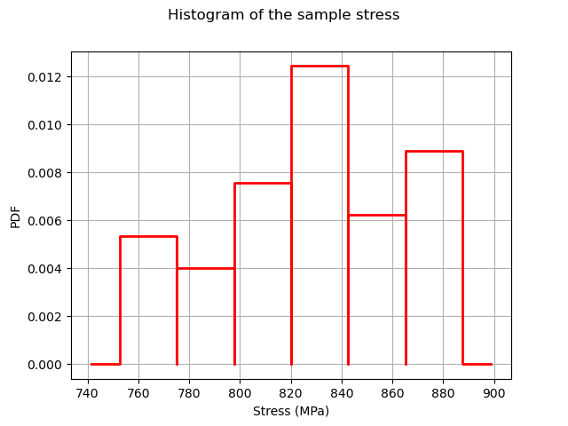
Generate observation noise.
stressObservationNoiseSigma = 10.0e6 # (Pa)
noiseSigma = ot.Normal(0.0, stressObservationNoiseSigma)
sampleNoiseH = noiseSigma.getSample(sampleSize)
observedStress = outputStress + sampleNoiseH
observedStrain = inputSample[:, 0]
graph = ot.Graph("Observations", "Strain", "Stress (MPa)", True)
cloud = ot.Cloud(observedStrain, observedStress / 1.0e6)
graph.add(cloud)
view = viewer.View(graph)
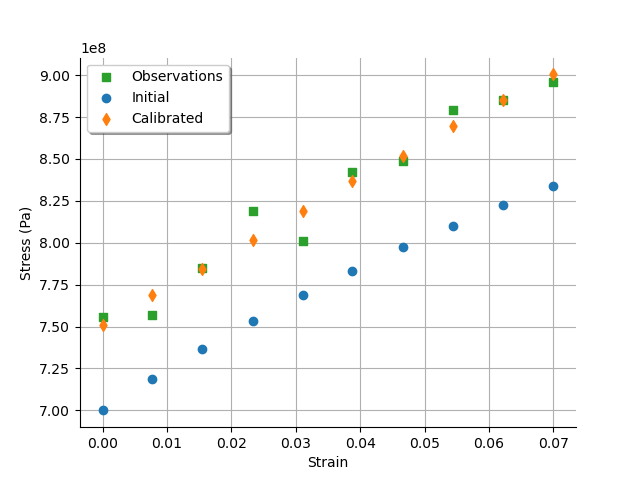
Set the calibration parameters¶
Define the value of the reference values of the ![\theta]() parameter. In the bayesian framework, this is called the mean of the prior gaussian distribution. In the data assimilation framework, this is called the background.
parameter. In the bayesian framework, this is called the mean of the prior gaussian distribution. In the data assimilation framework, this is called the background.
R = 700e6 # Exact : 750e6
C = 2500e6 # Exact : 2750e6
Gamma = 8.0 # Exact : 10
thetaPrior = [R, C, Gamma]
The following statement create the calibrated function from the model. The calibrated parameters R, C, Gamma are at indices 1, 2, 3 in the inputs arguments of the model.
calibratedIndices = [1, 2, 3]
mycf = ot.ParametricFunction(g, calibratedIndices, thetaPrior)
Calibration with linear least squares¶
The LinearLeastSquaresCalibration class performs the linear least squares calibration by linearizing the model in the neighbourhood of the reference point.
algo = ot.LinearLeastSquaresCalibration(
mycf, observedStrain, observedStress, thetaPrior, "SVD"
)
The run method computes the solution of the problem.
algo.run()
calibrationResult = algo.getResult()
Analysis of the results¶
The getParameterMAP method returns the maximum of the posterior distribution of .
thetaMAP = calibrationResult.getParameterMAP()
thetaMAP
We can compute a 95% confidence interval of the parameter ![\theta^\star]() .
.
thetaPosterior = calibrationResult.getParameterPosterior()
thetaPosterior.computeBilateralConfidenceIntervalWithMarginalProbability(0.95)[0]
We can see that the Gamma parameter has a large confidence interval : even the sign of the parameter is unknown. The parameter which is calibrated with the smallest confidence interval is R, which confidence interval is [708.3,780.0] (MPa). This is why this parameter seems the most important in this case.
graph = calibrationResult.drawObservationsVsInputs()
graph.setLegendPosition("topleft")
view = viewer.View(graph)
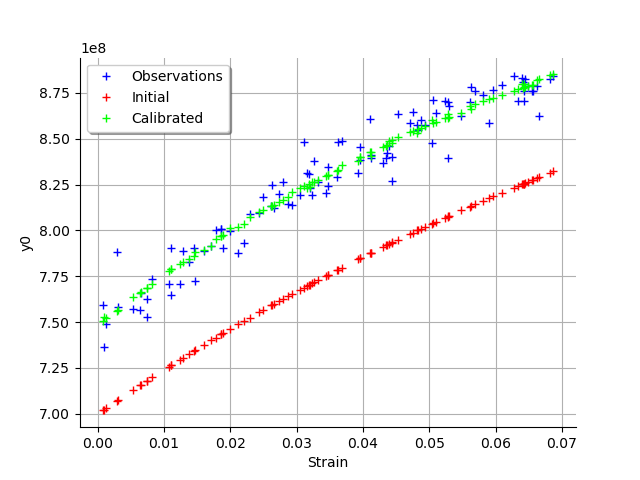
We see that there is a good fit after calibration, since the predictions after calibration (i.e. the green crosses) are close to the observations (i.e. the blue crosses).
graph = calibrationResult.drawObservationsVsPredictions()
view = viewer.View(graph)
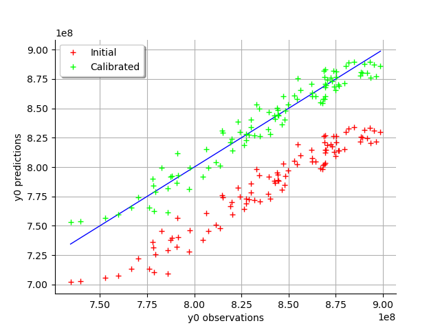
We see that there is a much better fit after calibration, since the predictions are close to the diagonal of the graphics.
observationError = calibrationResult.getObservationsError()
observationError
graph = calibrationResult.drawResiduals()
graph.setLegendPosition("topleft")
view = viewer.View(graph)
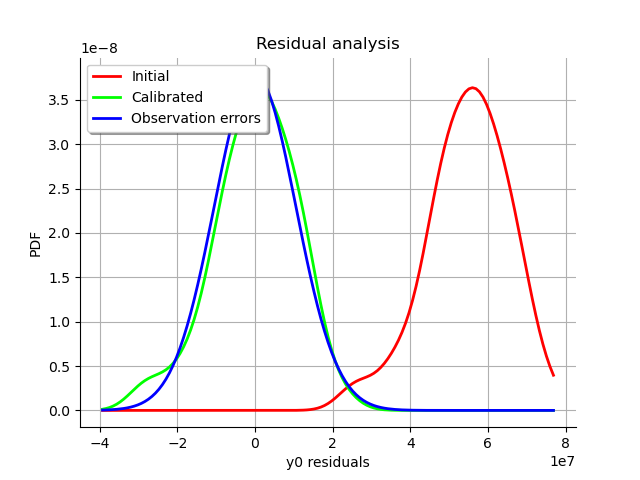
The analysis of the residuals shows that the distribution is centered on zero and symmetric. This indicates that the calibration performed well.
graph = calibrationResult.drawParameterDistributions()
view = viewer.View(graph)
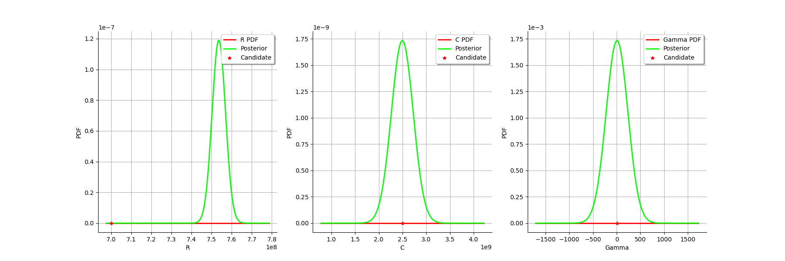
Moreover, the distribution of the residuals is close to being gaussian.
graph = calibrationResult.drawResidualsNormalPlot()
view = viewer.View(graph)
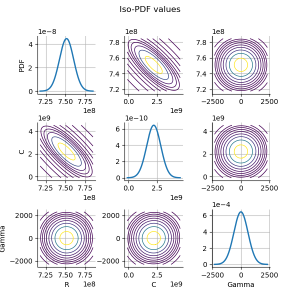
Calibration with nonlinear least squares¶
The NonLinearLeastSquaresCalibration class performs the non linear least squares calibration by minimizing the squared euclidian norm between the predictions and the observations.
algo = ot.NonLinearLeastSquaresCalibration(
mycf, observedStrain, observedStress, thetaPrior
)
The run method computes the solution of the problem.
algo.run()
calibrationResult = algo.getResult()
Analysis of the results¶
The getParameterMAP method returns the maximum of the posterior distribution of .
thetaMAP = calibrationResult.getParameterMAP()
thetaMAP
We can compute a 95% confidence interval of the parameter .
thetaPosterior = calibrationResult.getParameterPosterior()
thetaPosterior.computeBilateralConfidenceIntervalWithMarginalProbability(0.95)[0]
We can see that all three parameters are estimated with a large confidence interval.
graph = calibrationResult.drawObservationsVsInputs()
graph.setLegendPosition("topleft")
view = viewer.View(graph)
We see that there is a good fit after calibration, since the predictions after calibration (i.e. the green crosses) are close to the observations (i.e. the blue crosses).
graph = calibrationResult.drawObservationsVsPredictions()
view = viewer.View(graph)
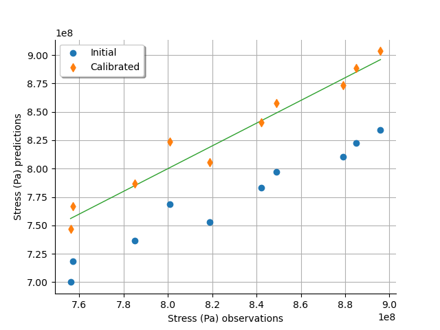
We see that there is a much better fit after calibration, since the predictions are close to the diagonal of the graphics.
observationError = calibrationResult.getObservationsError()
observationError
graph = observationError.drawPDF()
view = viewer.View(graph)
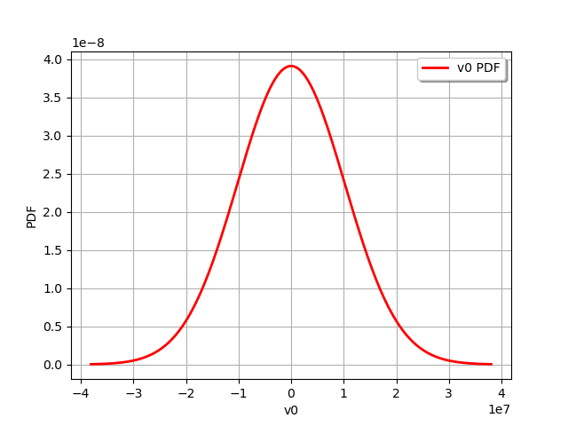
graph = calibrationResult.drawResiduals()
graph.setLegendPosition("topleft")
view = viewer.View(graph)
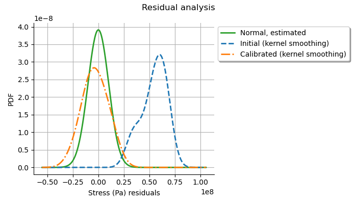
The analysis of the residuals shows that the distribution is centered on zero and symmetric. This indicates that the calibration performed well.
Moreover, the distribution of the residuals is close to being gaussian. This indicates that the observation error might be gaussian.
graph = calibrationResult.drawParameterDistributions()
view = viewer.View(graph)
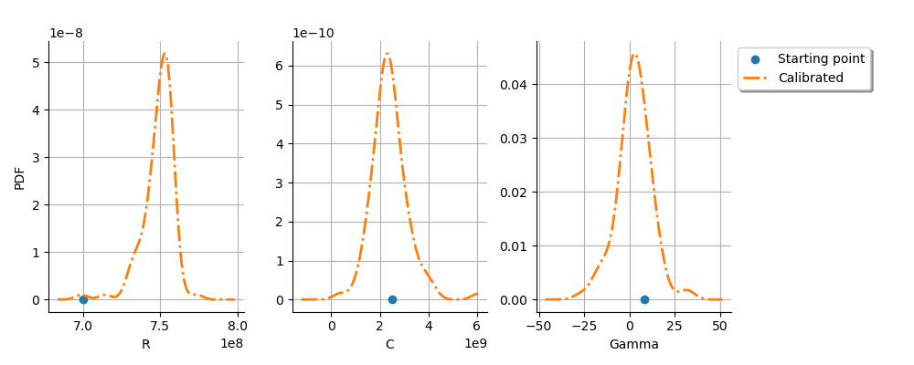
graph = calibrationResult.drawResidualsNormalPlot()
view = viewer.View(graph)
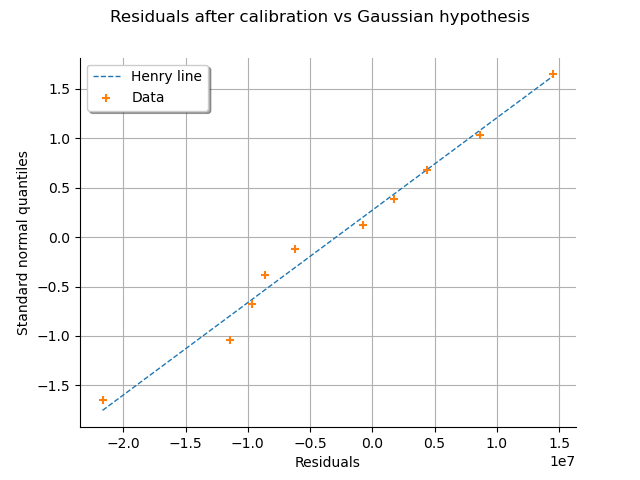
Gaussian calibration parameters¶
The standard deviation of the observations errors.
sigmaStress = 1.0e7 # (Pa)
Define the covariance matrix of the output Y of the model.
errorCovariance = ot.CovarianceMatrix(1)
errorCovariance[0, 0] = sigmaStress**2
Define the covariance matrix of the parameters to calibrate.
sigmaR = 0.1 * R
sigmaC = 0.1 * C
sigmaGamma = 0.1 * Gamma
sigma = ot.CovarianceMatrix(3)
sigma[0, 0] = sigmaR**2
sigma[1, 1] = sigmaC**2
sigma[2, 2] = sigmaGamma**2
sigma
Gaussian linear calibration¶
The GaussianLinearCalibration class performs the gaussian linear calibration by linearizing the model in the neighbourhood of the prior.
algo = ot.GaussianLinearCalibration(
mycf, observedStrain, observedStress, thetaPrior, sigma, errorCovariance
)
The run method computes the solution of the problem.
algo.run()
calibrationResult = algo.getResult()
Analysis of the results¶
The getParameterMAP method returns the maximum of the posterior distribution of .
thetaMAP = calibrationResult.getParameterMAP()
thetaMAP
We can compute a 95% confidence interval of the parameter .
thetaPosterior = calibrationResult.getParameterPosterior()
thetaPosterior.computeBilateralConfidenceIntervalWithMarginalProbability(0.95)[0]
We can see that all three parameters are estimated with a large confidence interval.
graph = calibrationResult.drawObservationsVsInputs()
graph.setLegendPosition("topleft")
view = viewer.View(graph)
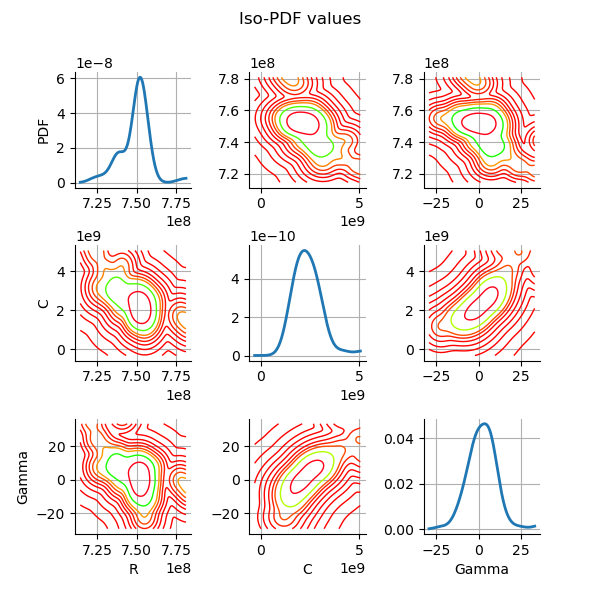
We see that there is a good fit after calibration, since the predictions after calibration (i.e. the green crosses) are close to the observations (i.e. the blue crosses).
graph = calibrationResult.drawObservationsVsPredictions()
view = viewer.View(graph)
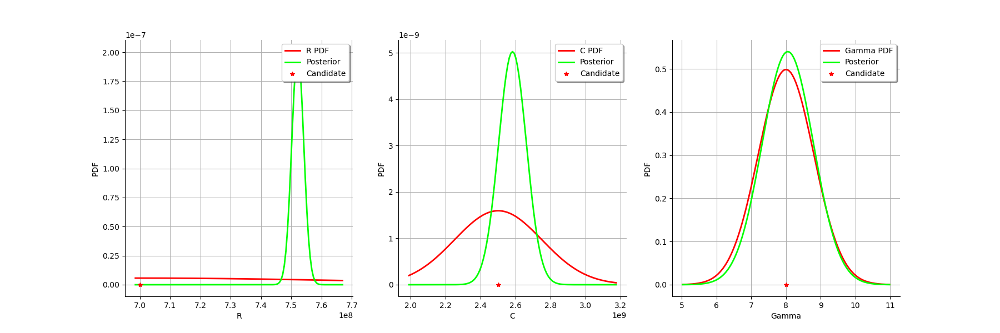
We see that there is a much better fit after calibration, since the predictions are close to the diagonal of the graphics.
The observation error is predicted by linearizing the problem at the prior.
observationError = calibrationResult.getObservationsError()
observationError
This can be compared to the residuals distribution, which is computed at the posterior.
graph = calibrationResult.drawResiduals()
graph.setLegendPosition("topleft")
view = viewer.View(graph)
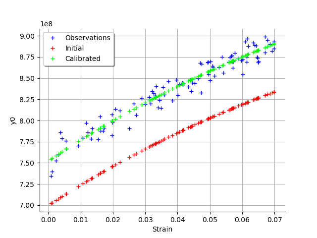
The analysis of the gaussian distribution (the blue line) of the observation errors is close to the posterior distribution of the residuals (the green line). Moreover, the posterior distribution is centered. These information indicate that the calibration performed well.
graph = calibrationResult.drawParameterDistributions()
view = viewer.View(graph)
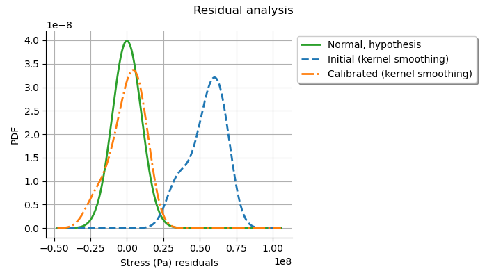
graph = calibrationResult.drawResidualsNormalPlot()
view = viewer.View(graph)
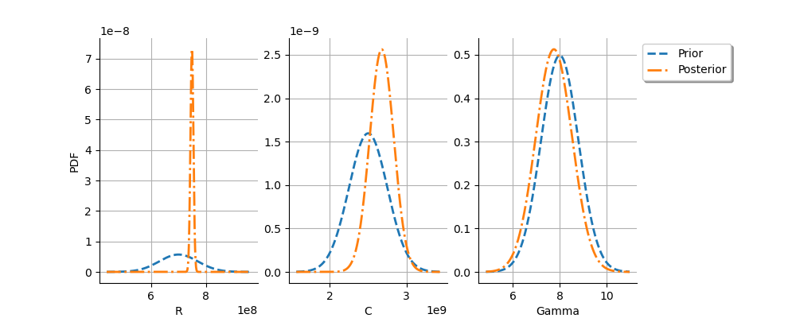
For the ![R]() variable, the observations are much more important than the prior: this is shown by the fact that the posterior and prior distribution of the variable are very different.
variable, the observations are much more important than the prior: this is shown by the fact that the posterior and prior distribution of the variable are very different.
We see that the prior and posterior distribution are close to each other for the ![\gamma]() variable: the observations did not convey much information for this variable.
variable: the observations did not convey much information for this variable.
Gaussian nonlinear calibration¶
The GaussianNonLinearCalibration class performs the gaussian nonlinear calibration.
algo = ot.GaussianNonLinearCalibration(
mycf, observedStrain, observedStress, thetaPrior, sigma, errorCovariance
)
The run method computes the solution of the problem.
algo.run()
calibrationResult = algo.getResult()
Analysis of the results¶
The getParameterMAP method returns the maximum of the posterior distribution of .
thetaMAP = calibrationResult.getParameterMAP()
thetaMAP
We can compute a 95% confidence interval of the parameter .
thetaPosterior = calibrationResult.getParameterPosterior()
thetaPosterior.computeBilateralConfidenceIntervalWithMarginalProbability(0.95)[0]
We can see that all three parameters are estimated with a large confidence interval.
graph = calibrationResult.drawObservationsVsInputs()
graph.setLegendPosition("topleft")
view = viewer.View(graph)
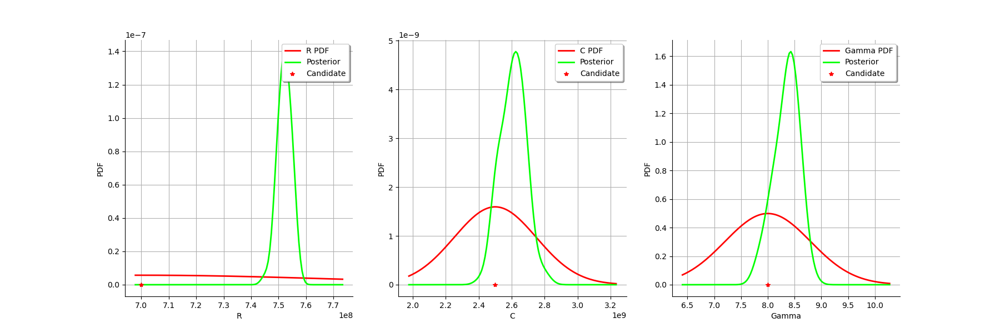
We see that there is a good fit after calibration, since the predictions after calibration (i.e. the green crosses) are close to the observations (i.e. the blue crosses).
graph = calibrationResult.drawObservationsVsPredictions()
view = viewer.View(graph)
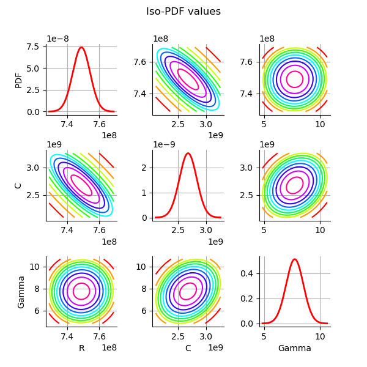
We see that there is a much better fit after calibration, since the predictions are close to the diagonal of the graphics.
The observation error is predicted by bootstraping the problem at the posterior.
observationError = calibrationResult.getObservationsError()
observationError
This can be compared to the residuals distribution, which is computed at the posterior.
graph = calibrationResult.drawResiduals()
view = viewer.View(graph)
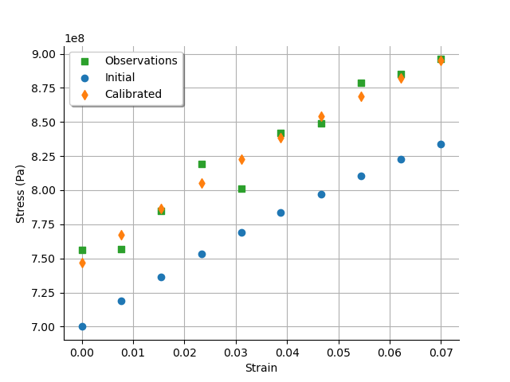
The analysis is very similar to the linear calibration.
graph = calibrationResult.drawParameterDistributions()
view = viewer.View(graph)
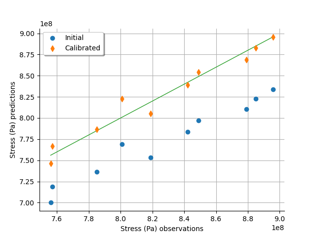
graph = calibrationResult.drawResidualsNormalPlot()
view = viewer.View(graph)
plt.show()
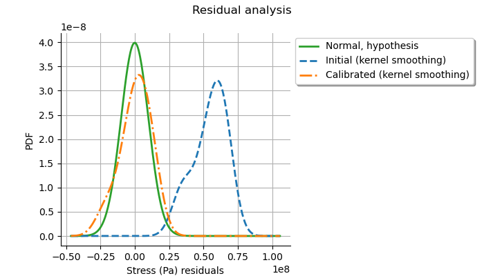
We see that the prior and posterior distribution for the parameter are close to each other, but not superimposed: the observations significantly brought information to the variable during the calibration.
Total running time of the script: ( 0 minutes 5.555 seconds)